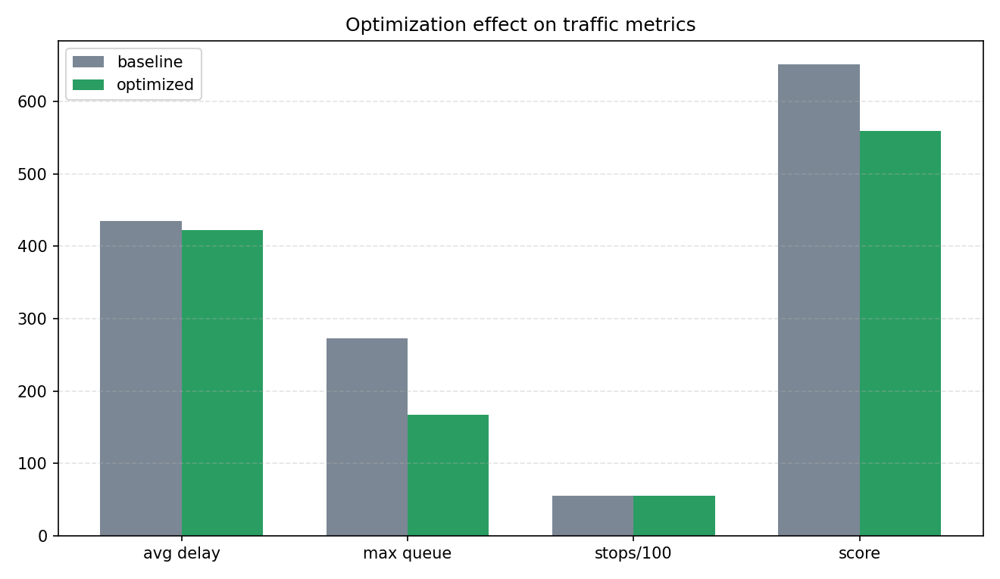

建模层
定义进口道、相位、需求、饱和流率、优先级和信号周期，支持将任意绿信比归一化到周期约束内。
Smart Intersection Signal Optimization
基于队列仿真与遗传算法的高峰期信号周期、绿信比分配优化项目
面向城市路口早晚高峰拥堵问题，本项目建立四进口交叉口交通流仿真模型，以 Webster 固定配时为基线，通过精英保留遗传算法优化信号周期与各相位绿灯时间，降低平均延误、最大排队长度与停车次数。
该页面展示了项目的建模思路、算法流程、实验结果和动态运行效果，可作为课程汇报入口。
GIF 展示了优化配时下各进口排队车辆随信号相位变化的过程。绿色表示当前放行方向，车辆条带长度代表该进口的实时排队压力。





定义进口道、相位、需求、饱和流率、优先级和信号周期，支持将任意绿信比归一化到周期约束内。
按秒推进车辆到达、排队和放行，统计平均延误、最大排队、通行率、公平性与停车次数。
将周期和绿信比分配编码为基因，通过选择、交叉、变异和精英保留迭代搜索更优配时。
自动生成结果图表、GIF 动图、CSV、JSON 和网页汇报材料，便于提交和展示。